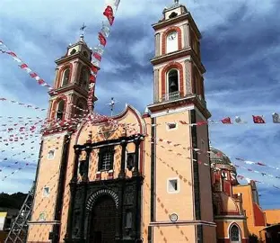
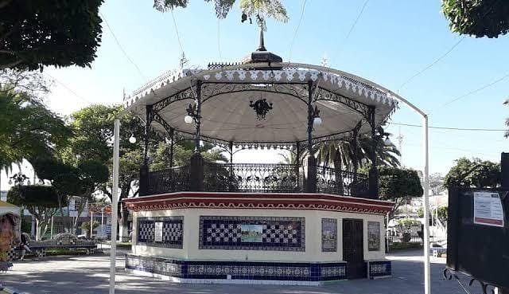
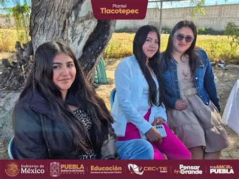

LO QUE ES TLACOTEPEC
Tlacotepec de Benito Juárez, ubicado en el sureste del estado de Puebla, México, tiene una historia rica y diversa reflejada en su desarrollo cultural y social
El nombre “Tlacotepec” proviene del náhuatl y significa “En la mitad del cerro”.
En 1895, Tlacotepec fue elevado a la categoría de villa bajo el nombre de Tlacotepec de Juárez en honor a Benito Juárez. Más tarde, en 1960, adoptó su denominación actual como Tlacotepec de Benito Juárez.
Hoy en día, el municipio es reconocido por su patrimonio cultural y sus tradiciones, siendo un ejemplo de la riqueza histórica y cultural del estado de Puebla

PARQUE CENTRAL

El parque central es un espacio muy cuidado cuyo quiosco destaca por tener incrustados mosaicos paisajísticos con cerca de 70 años de historia.
CECYTE TLACOTEPEC
El Colegio de Estudios Científicos y Tecnológicos del Estado de Puebla, con extensión Tlacotepec de Benito Juárez, es una institución pública que ofrece educación media superior en el área urbana. Su misión es brindar una educación integral que combine formación académica con el desarrollo de habilidades y valores para enfrentar los desafíos . La institución se destaca por sus instalaciones modernas, actividades extracurriculares.
RUTA AL CECYTE DESDE EL PARQUE CENTRAL
English: 1. Start at Central Park of Tlacotepec de Benito Juárez. 2. Head east on Juárez Avenue for 800 meters. 3. Turn left at the main gas station. 4. CECYTE will be on your right after 400 meters. Español: 1. Inicia en el Parque Central de Tlacotepec de Benito Juárez. 2. Dirigete al este por Avenida Juárez durante 800 metros. 3. Gira a la izquierda en la gasolinera principal. 4. EI CECYTE estará a tu derecha después de 400 metros.Si quieres conocer este lugar, haz clic en el siguiente enlace:
Conocer más